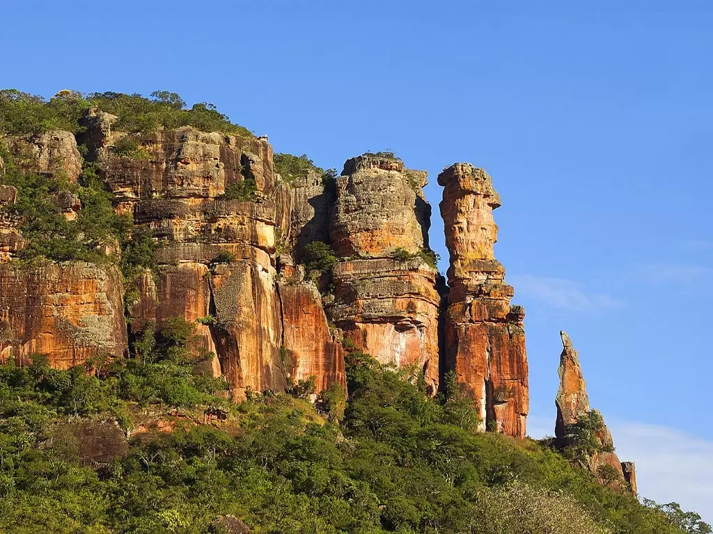

Conheça o lugar

A Serra do Roncador é um dos lugares mais misteriosos e fascinantes da região de Barra do Garças, no estado de Mato Grosso. Cercada por belas paisagens naturais, grandes formações rochosas e histórias lendárias, a serra atrai turistas, aventureiros e pesquisadores de várias partes do Brasil. O nome “Roncador” possui diferentes explicações populares. Algumas lendas afirmam que o vento passando pelas fendas das rochas produzia um som parecido com um ronco. Já antigas histórias indígenas contam que veados descansavam na serra e emitiam sons fortes durante a noite, dando origem ao nome do local. A Serra do Roncador se inicia próxima ao distrito de Vale dos Sonhos, em Barra do Garças, e se estende até a região da Serra do Cachimbo, no sul do Pará. A área é cercada por importantes rios brasileiros, como o Araguaia, Xingu, Kuluene e Rio das Mortes, formando uma paisagem rica em biodiversidade e natureza preservada. Além de sua beleza natural, a serra ficou conhecida pelas inúmeras lendas e mistérios. Durante muitos anos, exploradores acreditavam que a região escondia cidades antigas e civilizações perdidas. Um dos nomes mais conhecidos ligados à Serra do Roncador é o do coronel britânico Percy Fawcett, que desapareceu em uma expedição enquanto buscava uma suposta cidade perdida no interior do Brasil. Até hoje, a região desperta curiosidade por suas histórias misteriosas.
A Serra do Roncador também é um importante destino para o ecoturismo e aventuras. O local oferece trilhas famosas, como a trilha do Dedo de Deus e das Torres Gêmeas, além de paisagens naturais impressionantes, montanhas, paredões rochosos e áreas preservadas do Cerrado brasileiro. Visitar a Serra do Roncador é uma oportunidade de conhecer um dos cenários naturais mais marcantes do Mato Grosso, unindo aventura, natureza, cultura e mistério em um único lugar. Além das trilhas tradicionais, a Serra do Roncador possui diversos cânions, cachoeiras cristalinas, cavernas e piscinas naturais que encantam os visitantes. Muitas das trilhas da região passam por áreas de cerrado preservado e por cursos d’água de coloração azul intensa, criando cenários únicos para fotografia, banho e exploração da natureza. Algumas trilhas possuem nível moderado e outras são consideradas mais difíceis, sendo recomendadas para aventureiros experientes e acompanhados por guias locais. Entre os passeios mais conhecidos da região está o Cânion do Cipó, famoso por suas águas azul-turquesa, paredões rochosos e piscinas naturais profundas. O local se tornou um dos roteiros mais procurados por turistas que visitam Barra do Garças em busca de aventura e contato direto com a natureza. Outro atrativo muito visitado é o Salão dos Deuses, uma formação rochosa impressionante que chama atenção pelo formato das pedras e pela vista panorâmica da serra.
A região também abriga diversas cachoeiras de águas cristalinas, muitas delas escondidas entre montanhas e trilhas. Algumas possuem escorregadores naturais de pedra, poços profundos para banho e pequenas cavernas atrás das quedas d’água. Existem cachoeiras de águas frias, mornas e até termais, tornando a experiência ainda mais diferente para os visitantes. Outro detalhe que torna a Serra do Roncador tão famosa é o forte misticismo que envolve a região. Muitas histórias falam sobre cidades subterrâneas, portais secretos, desaparecimentos misteriosos e até avistamentos de objetos voadores não identificados. Em Barra do Garças, o tema é tão conhecido que a cidade chegou a construir um “discoporto”, um espaço turístico inspirado nas histórias sobre OVNIs e fenômenos sobrenaturais ligados à serra. Algumas cavernas da Serra do Roncador possuem inscrições antigas e marcas nas pedras que despertam curiosidade entre pesquisadores e visitantes. Uma das mais conhecidas é a chamada “Caverna dos Pezinhos”, famosa pelas marcas semelhantes a pegadas encontradas nas paredes e no teto da caverna. Até hoje, existem diferentes teorias sobre a origem dessas marcas, aumentando ainda mais os mistérios da região. A biodiversidade da Serra do Roncador também é um grande destaque. A região possui uma rica fauna e flora típica do Cerrado brasileiro, abrigando espécies como araras, tamanduás-bandeira, lobos-guará, onças-pintadas, tatus-canastra e diversas aves silvestres. A combinação entre áreas de cerrado, rios e formações rochosas cria um ambiente natural extremamente importante para a preservação da vida selvagem.
Para quem gosta de aventura, a serra oferece atividades como trekking, rapel, camping, observação da natureza, banhos em cachoeiras e exploração de cavernas. Muitos turistas procuram a região para viver experiências de ecoturismo e turismo de aventura, principalmente durante o período de seca, entre maio e outubro, quando as trilhas ficam mais acessíveis e o clima mais agradável. A Serra do Roncador é considerada um dos lugares mais misteriosos do Brasil e continua despertando a imaginação de pessoas do mundo inteiro. Seja pelas lendas, pelas paisagens naturais ou pelas aventuras que oferece, a região se tornou um símbolo do turismo ecológico e místico de Barra do Garças e do estado de Mato Grosso. Além de todas as suas atrações naturais e históricas, a Serra do Roncador possui fácil acesso para visitantes que desejam conhecer de perto um dos cenários mais impressionantes do Centro-Oeste brasileiro. Localizada próxima à cidade de Barra do Garças, a região recebe turistas durante todo o ano e conta com diversos pontos de entrada para trilhas, passeios ecológicos e áreas de contemplação da natureza. Abaixo, é possível visualizar a localização da Serra do Roncador e entender melhor onde está situado esse importante destino turístico e cultural do estado de Mato Grosso.
As condições de acesso, funcionamento, valores e regras podem mudar. Confirme as informações com responsáveis ou órgãos locais antes de realizar o passeio.